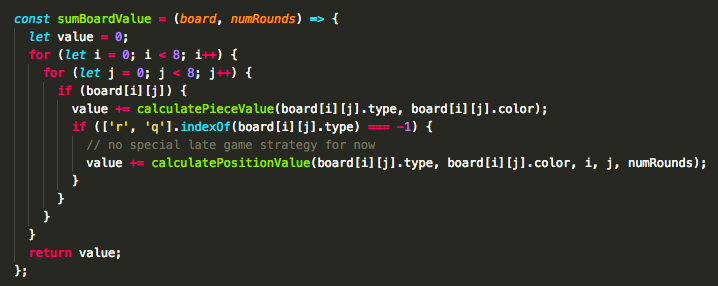

React-Chess
React-Chess was born from the love of the game. This is going to be under constant development as I learn to optimize the AI, get better at the game and just build beautiful UI. If you have the love for chess or programming in general, I'd love to chat!

Project overview
- Real time chess with unique room ID
- Basic AI using minimax game theory and algorithm
- AI calculations are being done server side and client inputs are being handled through React/Redux for better users’ experience
- Utilize React/Redux for components’ reusability
- Bootstrap and CSS3/Sass to create responsive UI
- Routing via React-router V.4
- Passport.JS for simple, unobtrusive Node.JS authentications (local, Facebook and Google O-Auth 2.0 standard)
- Login/Signup screens are controlled through Node.JS using ejs view engine
- Socket.Io for real-time communications between clients and server
- Chat client supports multi-users in the same game room
- Chess UI logic is copied on both server and client side for better users’ experience
- PostgreSQL and Knex.JS for data migration and storage


Chat client
Utilized the power of WebSocket(socket.io) technology, the chat client is a real-time communication platform for players within the same ID sessions.
After the first player creates the room, a unique ID is made in Node.JS. Subsequent players who are invited will be joined on the same channel. The Socket will persist between all players to handle both conversations as well as rendering different board configurations.
The chat will also alert different moves from each player via Yellow-Subs chat bot, as well as announcing check, check mate and game winning status.
For future iteration, the chat will also support chat bot for games vs Yellow-Subs AI.
Minimax algorithm
Game theory is “the study of mathematical models of conflict and cooperation between intelligent rational decision-makers.”
DeepSubs Chess AI is built on this idea. Utilized minimax algorithm, the system essentially uses backtracking to determine the best move possible, at a given board configuration, given zero knowledge of how the opponent will proceed. The basis of game theory addresses zero-sum games. When one player makes a move, that results in a negative outcome for the other.
Minimax in particular, is minimizing the possible loss for a worst case (maximum loss) scenario. Generally speaking, the player tries to get the largest point value possible prior to knowing what the opponent would react, also the smallest value the opponent can force the player to receive, knowing his action. In another word, the chess AI will attempt to MINimize the opponent’s score, while MAXimize its own, at any given move. That being said, a ‘perfect’ game of chess will always result in a draw.

Every piece has an associated value given. The algorithm calculates initially only based on piece values. If Rook or Queen is lost, the algorithm will take in board positions, in addition to piece values, thus reducing the AI’s aggression. (Currently the board is being hardcoded at 10 rounds, however no improved strategy for late game movements yet)
Improvements: the pieces should swap new boards to accommodate for end game layouts.
Above is the Knight’s board for white player (point values will be flipped for black player). The Knights will favor mostly towards the middle of the field, while avoiding edges.
The algorithm will explore all possibilities of a given 8 X 8 board matrix recursively to a given depth (currently at 2 plies due to performance issues). The position is then being evaluated and returned either the smallest or the largest value of the child node back to the parent. In that way, it is either maximizing the gain or minimizing the loss. The move is then being loaded to the game engine and executed back to the player.
More on Alpha-Beta Pruning: To further optimize the searches and decrease work load on the AI, a pruning method is employed to keep track of the worst/best move of each player so far to avoid searching into branches that will given bad results.
This method can typically reduce the branching factor searches down to 25 from the average of 35 per ply.
Things to do:
This is right now the state of the AI. The plan is to update this section with Alpha/Beta pruning to improve searches and thus increases efficiency of the AI. The next step is to create a database for openers and endgame board configurations.